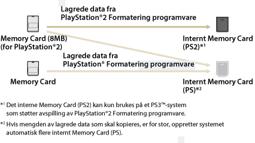

Spill > Spille PlayStation®2 / PlayStation® Formatering programvare > Bruke lagrede data på memory card
Bruke lagrede data på memory card
Hvis du vil bruke lagret data på et memory card (minnekort) (8 MB) (for PlayStation®2) eller et memory card (minnekort) for å spille et spill, må du kopiere dataene til et internt memory card (minnekort) i systemminnet. Du må bruke en minnekortadapter (selges separat) for å kopiere dataene.
Merknader
- Enkelte PlayStation®2 eller PlayStation®-programvareformattitler kan ha en annen prestasjon på PS3™-systemet enn på PlayStation®2 eller PlayStation®-systemene, eller fungerer muligens ikke ordentlig med PS3™-systemet.
- Disker av formatet PlayStation®2 kan dessuten ikke spilles av på enkelte PS3™-systemer. For mer informasjon, se [Typer plater som kan spilles av], besøk SIE-websiden for ditt område eller se dokumentasjonen som fulgte med PS3™-systemet.
1. |
Velg |
|---|---|
2. |
Kople til minnekortadapteren til PS3™ systemet og sett inn et minnekort. |
3. |
Velg ikonet for de lagrede dataene som du ønsker å kopiere fra det viste minnekortet, og trykk på |
4. |
Velg [Kopi]. |
5. |
Tilordne spor |
 (Spill) >
(Spill) >  (Memory Card tjeneste).
(Memory Card tjeneste). (Memory Card (PS)) eller
(Memory Card (PS)) eller  (Memory Card (PS2)) vises.
(Memory Card (PS2)) vises. (Lag nytt internt Memory Card) og følg instruksjonene på skjermen for å opprette et internt memory card.
(Lag nytt internt Memory Card) og følg instruksjonene på skjermen for å opprette et internt memory card.Tips
- Lagrede data fra et Memory card (8 MB) (for PlayStation®2) eller et Memory card kopieres til et internt memory card som vist nedenfor, avhengig av datatypen.
- For enkelte lagrede data, kan kopieringen ta opp til flere minutter.
- For å kopiere alle lagrede data som er lagret på minnekortet (8MB) (for PlayStation®2) eller et minnekort, velg minnekort i trinn 3, trykk på
 -tasten, og velg dereter [Kopi] fra alternativmenyen.
-tasten, og velg dereter [Kopi] fra alternativmenyen. - Det kan være forbudt å kopiere noen lagrede data. Når du bruker slik data på et PS3™-system, velger du [Flytt] i trinn 4. Lagret data flyttes til systemminnet og slettes fra memory card (minnekort).
- Du kan flytte lagrede data tilbake til minnekortet senere.

Kopiere lagrede data til et minnekort
Kopier lagret data fra programvare i PlayStation®2- / PlayStation®-format som er lagret i systemminnet til et memory card (minnekort) eller til et memory card (minnekort) (8 MB) (for PlayStation®2). Du må bruke en minnekortadapter (selges separat) for å kopiere dataene.
1. |
Velg |
|---|---|
2. |
Kople til minnekortadapteren til PS3™-systemet og sett inn et minnekort. |
3. |
Velg ikonet til de lagrede dataene som du vil kopiere fra |
4. |
Velg [Kopi]. |
 (Internt Memory Card (PS)) eller
(Internt Memory Card (PS)) eller  (Internt Memory Card (PS2)) der dataene ble lagret, og trykk deretter på
(Internt Memory Card (PS2)) der dataene ble lagret, og trykk deretter på Tips
- Flere lagrede dataelementer på et internt minnekort kan ikke kopieres samlet til et minnekort.
- Det kan være forbudt å kopiere noen lagrede data. Når du bruker slik data på et PS3™-system, velger du [Flytt] i trinn 4. Lagret data flyttes til systemminnet og slettes fra det interne memory card (minnekort).
- Du kan flytte lagrede data tilbake til minnekortet senere.